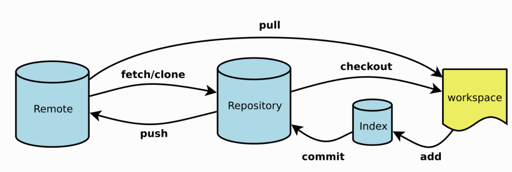

Git 是一个开源的分布式版本控制系统，用于敏捷高效地处理任何或小或大的项目。
Git 是 Linus Torvalds 为了帮助管理 Linux 内核开发而开发的一个开放源码的版本控制软件。
Git 与常用的版本控制工具 CVS, Subversion 等不同，它采用了分布式版本库的方式，不必服务器端软件支持。

常用指令
1
2
3
4
5
6
7
8
9
10
11
12
13
14
15
16
17
18
19
20
21
22
23
24
25
26
27
28
29
30
31
32
33
34
35
36
37
38
39
40
41
42
43
44
45
46
47
48
49
50
51
52
53
54
55
56
57
58
59
60
61
62
63
64
65
66
67
68
69
70
71
72
73
74
75
76
| $ git init
$ git clone [url]
$ git config --list
$ git config -e [--global]
$ git add
$ git rm
$ git commit -m [message]
$ git commit -a
$ git commit --amend -m [message]
$ git commit --amend [file1] [file2] ...
$ git branch
$ git branch -r
$ git branch [branch-name]
$ git checkout [branch-name]
$ git checkout -b [branch]
$ git branch [branch] [commit]
$ git checkout -b [branch] [tag]
$ git branch --track [branch] [remote-branch]
$ git branch --set-upstream [branch] [remote-branch]
$ git merge [branch]
$ git cherry-pick [commit]
$ git branch -d [branch-name]
$ git push origin --delete [branch-name]
$ git branch -dr [remote/branch]
$ git tag
$ git tag [tag]
$ git tag [tag] [commit]
$ git show [tag]
$ git push [remote] [tag]
$ git push [remote] --tags
$ git status
$ git log
$ git log --stat
$ git log --follow [file]
$ git log -p [file]
$ git blame [file]
$ git diff
$ git diff --cached [file]
$ git diff HEAD
$ git diff [first-branch]...[second-branch]
$ git show [commit]
$ git show --name-only [commit]
$ git show [commit]:[filename]
$ git reflog
$ git fetch [remote]
$ git remote -v
$ git remote show [remote]
$ git remote add [shortname] [url]
$ git pull [remote] [branch]
$ git push [remote] [branch]
$ git push [remote] --force
$ git push [remote] --all
$ git checkout [file]
$ git checkout [commit] [file]
$ git checkout .
$ git reset [file]
$ git reset --hard
$ git reset [commit]
$ git reset --hard [commit]
$ git reset --keep [commit]
$ git revert [commit]
|
学习资源